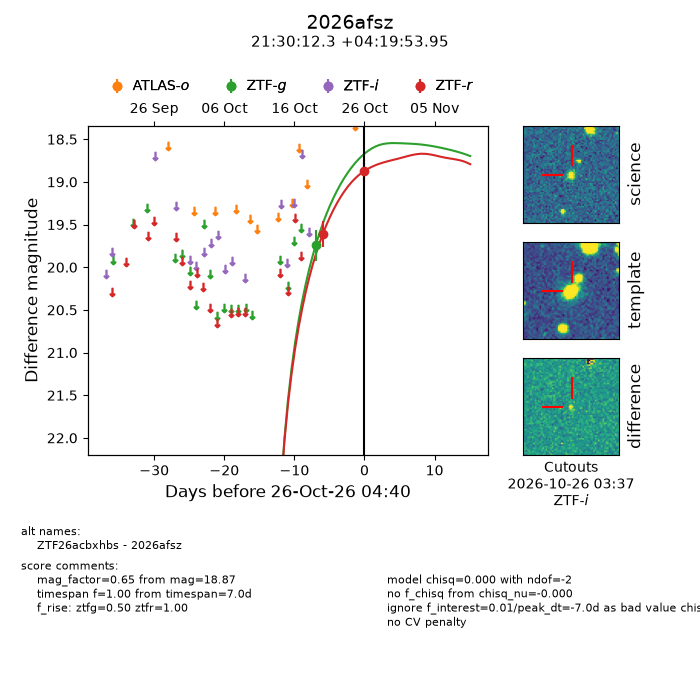
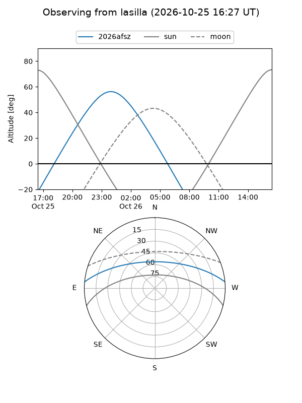
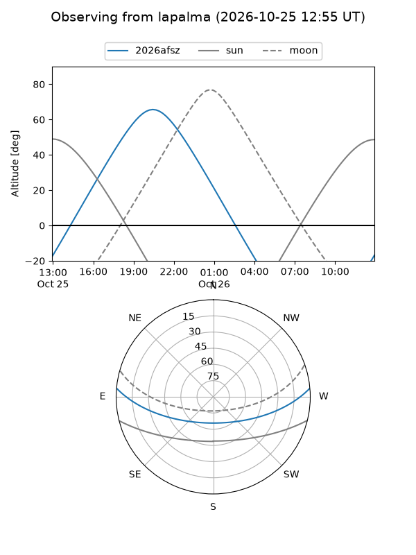
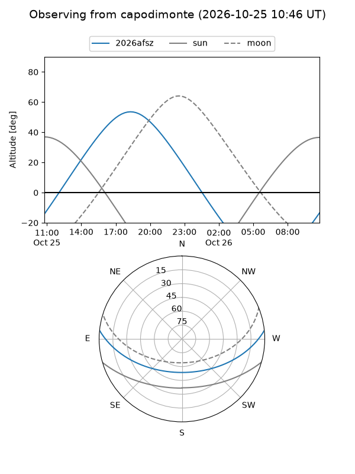
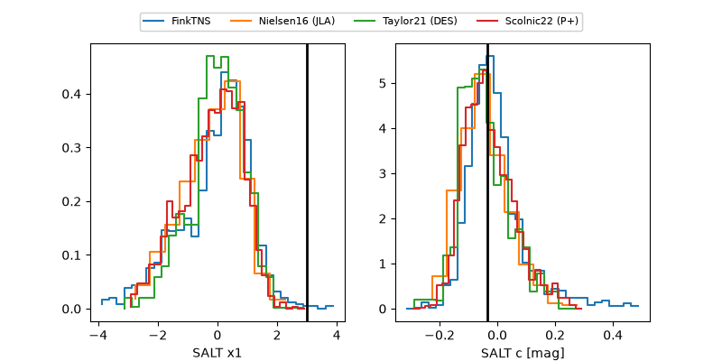

2026afsz
Target 2026afsz at 2026-10-26 04:41
Aliases and brokers:
FINK-ZTF: ztf.fink-portal.org/ZTF26acbxhbs
Lasair-ZTF: lasair-ztf.lsst.ac.uk/objects/ZTF26acbxhbs
ALeRCE-ZTF: alerce.online/object/ZTF26acbxhbs
YSE-PZ: ziggy.ucolick.org/yse/transient_detail/2026afsz
TNS name: wis-tns.org/object/2026afsz
Direct TNS query: direct search
alt names
ZTF26acbxhbs (ztf,fink_ztf)
2026afsz (tns,yse)
Coordinates:
equatorial (ra, dec) = 322.5512,+4.33165
equatorial (HMS+DMS) = 21:30:12.30,+04:19:53.95
galactic (l, b) = (57.9203,-32.16325)
Flags:
peak dt: -7.0
Photometry:
last ztfg=19.74, ztfr=18.87
1 ztfg, 2 ztfr detections
Lightcurve

Visibility



Additional plots
